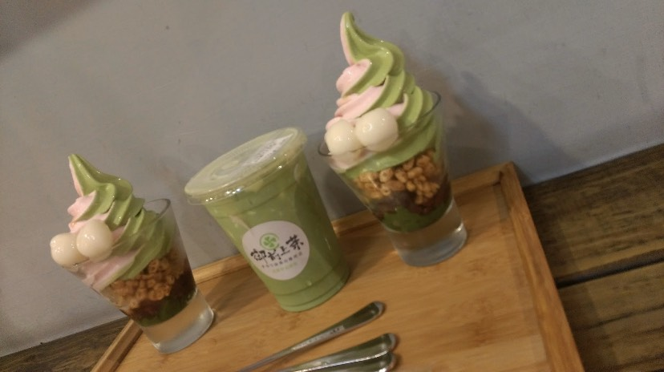
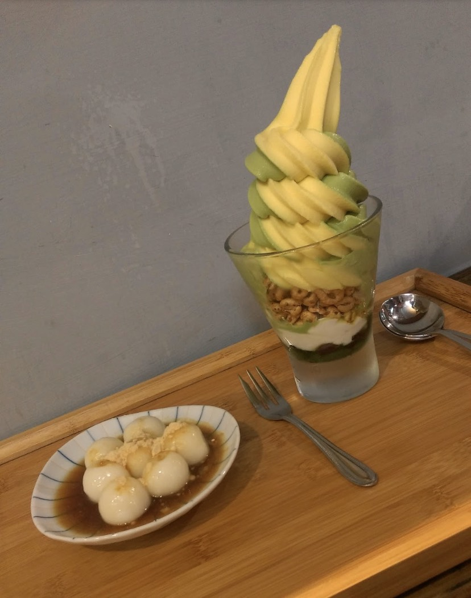
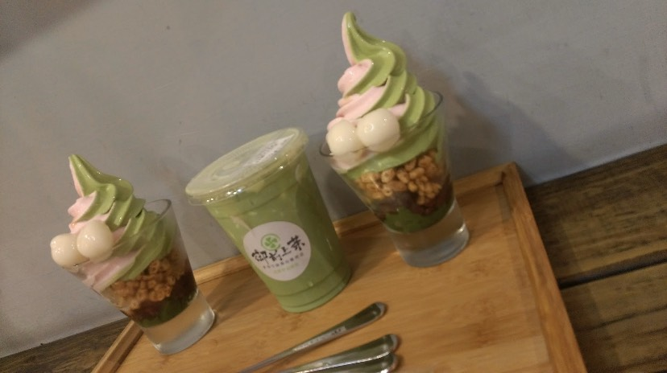
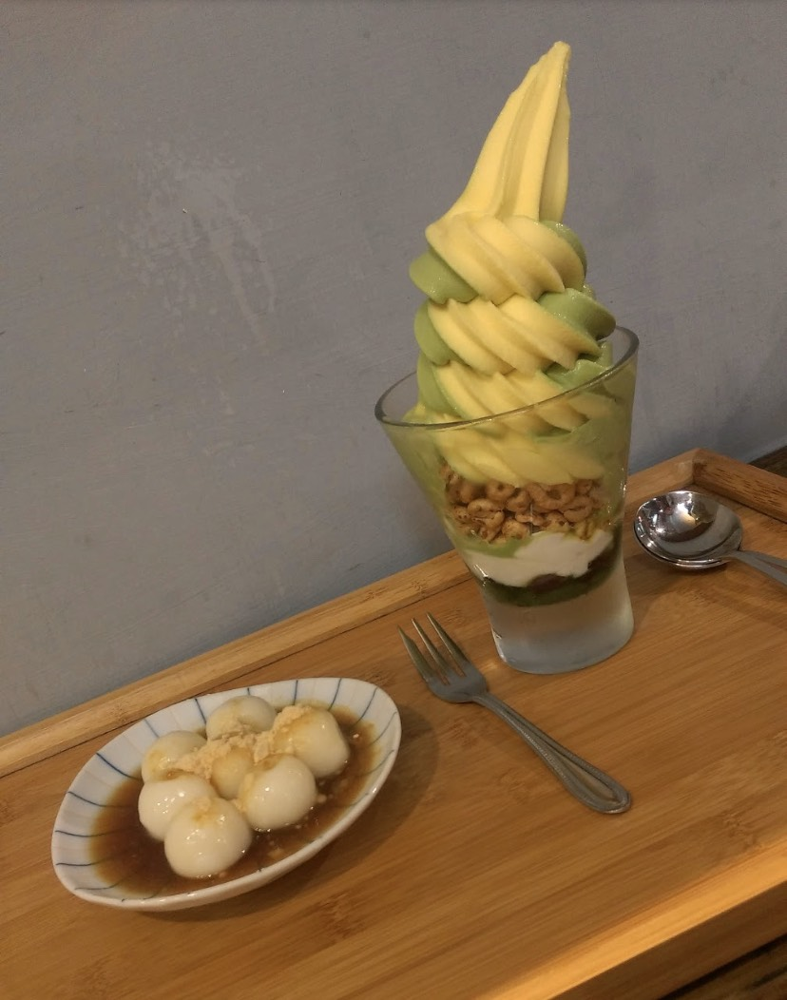

學期心得 在這學期當中，學到很多網頁上的技巧，雖然有蠻多理論都有些不太懂，但還是吸收蠻多的。 例如：html的怎麼寫之類的，還有學會怎麼用用Githud如何上傳、修改、建檔之類的。 老師在教學上也相當有熱情，我們不懂的問題也能適時給予幫助，講解的方面也相當詳細。 整學期下來，課程相當輕鬆愉快。 這次的網頁製作過程雖然花費蠻多時間在整理、製作，但完成後， 整體來說相當的符合自己的期待，以及有相當大的成就感的。 謝謝老師的教學，讓我獲益良多。 
在這學期當中，學到很多網頁上的技巧，雖然有蠻多理論都有些不太懂，但還是吸收蠻多的。 例如：html的怎麼寫之類的，還有學會怎麼用用Githud如何上傳、修改、建檔之類的。 老師在教學上也相當有熱情，我們不懂的問題也能適時給予幫助，講解的方面也相當詳細。 整學期下來，課程相當輕鬆愉快。 這次的網頁製作過程雖然花費蠻多時間在整理、製作，但完成後， 整體來說相當的符合自己的期待，以及有相當大的成就感的。 謝謝老師的教學，讓我獲益良多。 